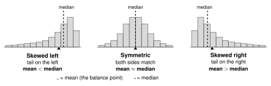
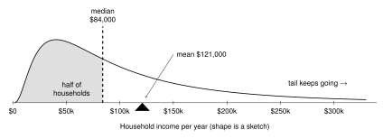
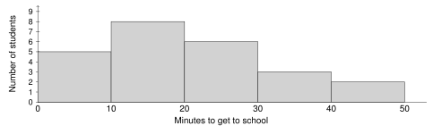
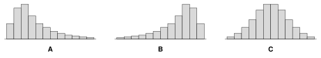

| Mean (also called the average) |
Median (the middle) |
1. Add all the values.
2. Divide by how many values there are. |
1. Put the values in order.
2. Find the middle value. |
Data: 2, 3, 8, 3, 4
Mean = 4
In symbols: |
In order: 2, 3, 3, 4, 8 Median = 3
Even number of values? Two numbers are in the middle. Find the number halfway between them.
2, 3, 5, 8 Median = 4 |
is the Greek capital letter sigma. It means add up. means add up all the
values. (“x-bar”) is the mean. is how many values.
Shape changes the mean. The tail is the long, low side of a graph.
The mean is pulled toward the tail. The median is not pulled much.

Real example: US household income (2024).
Most households earn a medium amount. A small number of households earn millions of dollars.
That makes a long tail on the right.

The median is a better description of a typical household. Most households earn less than the mean.
Source: US Census Bureau, Income in the United States: 2024. Median $83,730. Mean about $121,000.
1.2 Mean, Median, and Shape - PracticeName
Work with a partner. Compare answers when you finish each problem.
1. A student recorded how many hours she slept each night for one week.
7, 8, 6, 9, 7, 5, 7
- Find the mean.
- Find the median.
2. Six students timed their walk to the bus stop, in minutes.
15, 22, 18, 30, 19, 16
- Find the mean.
- Find the median.
3. This dot plot shows how many books some students read this month.
- How many students are in the data?
- Find the median.
- Find the mean.
4. This histogram shows how many minutes some students take to get to school.

Which bar holds the median? Explain.
5. A small company has 5 people. Here is what each person is paid in one year.
| Worker A | $30,000 |
| Worker B | $32,000 |
| Worker C | $35,000 |
| Worker D | $38,000 |
| Owner | $265,000 |
- Find the mean pay.
- Find the median pay.
- The company puts this in a job ad: “Average pay at our company: $80,000!”
Is this true? Is it fair to a person looking for a job? Explain.
- Leave out the owner. Find the mean pay of the 4 workers. How much did one person change the mean?
6. Look at each histogram. Name the shape. Then tell if the mean is greater than, less than, or about equal to the median.

| Histogram | Shape | Mean , , or median? |
|---|
| A | | |
| B | | |
| C | | |
7. Guess the shape of each data set: skewed left, symmetric, or skewed right. Explain.
- The price of every house sold in Columbia this year.
- Scores on a very easy test. Most students score 90 to 100.
- The heights of all adult women in Missouri.
8. Look at the US household income graph on page 1.
- Why is the mean ($121,000) bigger than the median ($84,000)?
- A news story says, “The average US household earns $121,000.”
Is this true? Does it describe a typical household? Explain.
- Do more than half of households earn less than $121,000? How do you know?